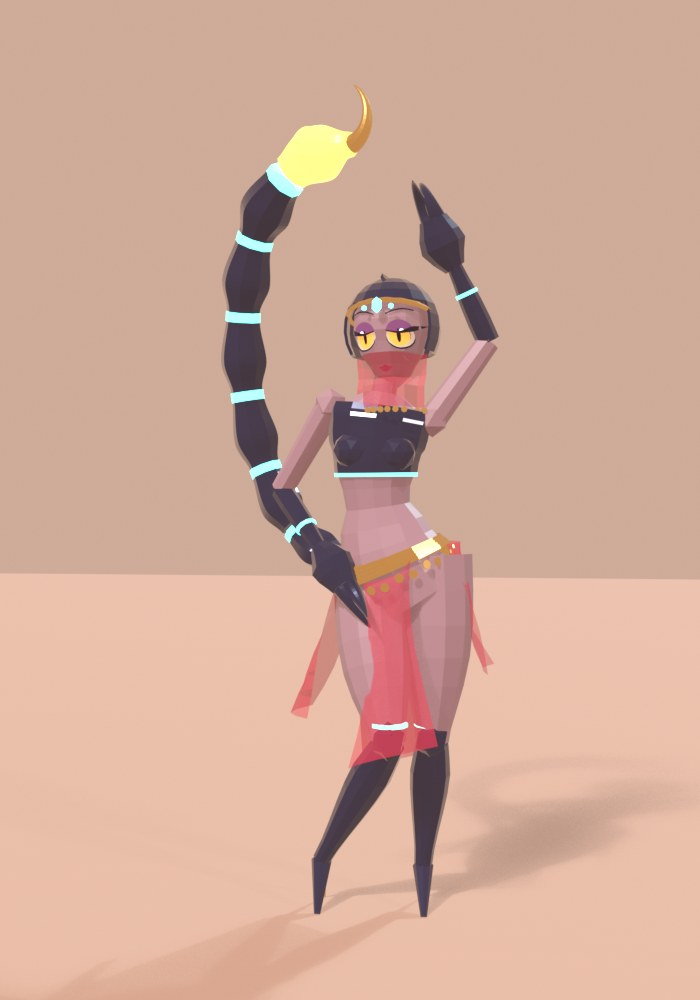
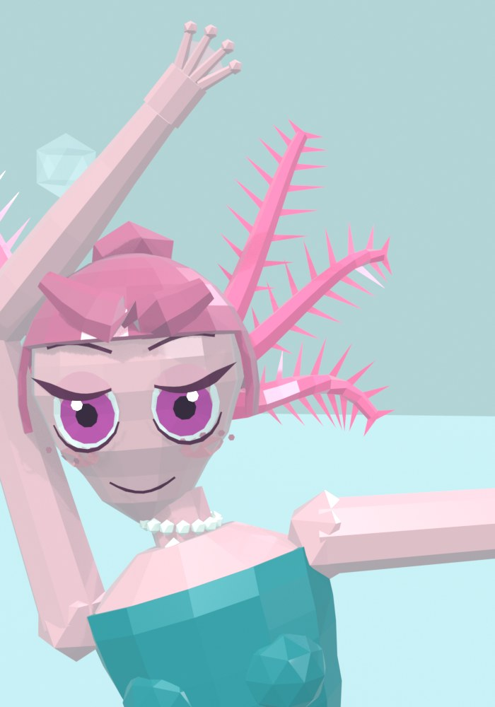
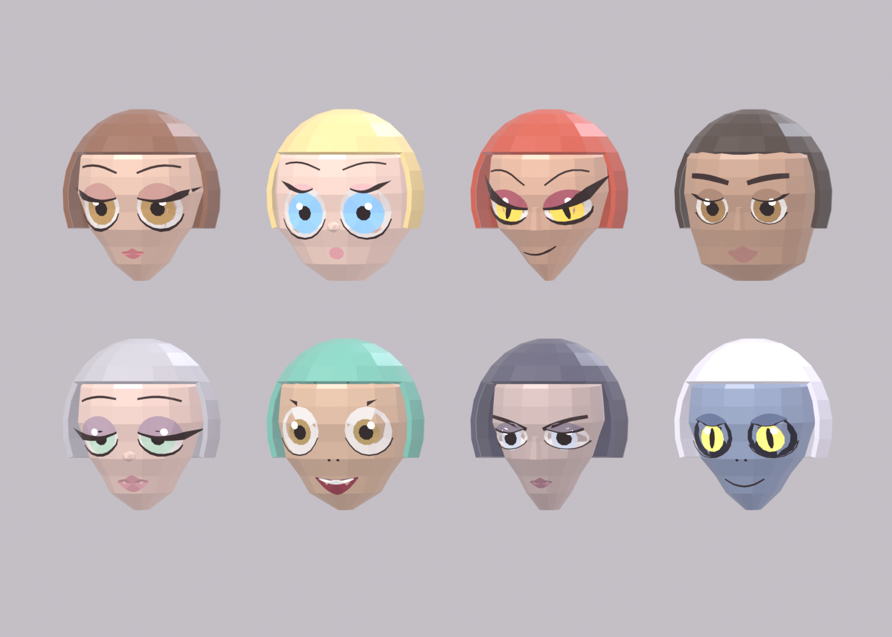
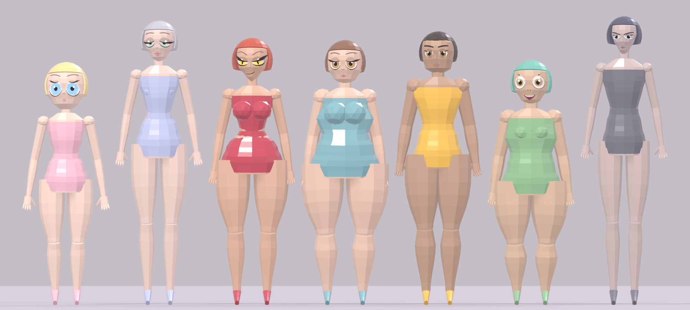

Monster girls built entirely from Python scripts run inside Blender, with no sculpting and no hand-placed vertices. Each one is a script that lays out a skeleton, lofts the body around it, dresses it and renders three views. Each figure mixes an animal with a costume and a pose, like a scorpion belly dancer, an axolotl ballerina or a hedgehog hugging her knees.
The first figures were smooth and glossy: Serpentine, the Naga Queen, Siren, Vespera, Abyssa and the Doll Angel. They were built from lofted tubes fused together with a voxel remesh, then rendered in Cycles. Siren, a porcelain gynoid with gold-rimmed plates, was the one that worked best. Faces were the hard part. They were sculpted from stacked rings and painted with masks, and they looked stiff.

A low-poly, flat-shaded style suits building by script. The facets all show, so a rough loft reads as a deliberate facet rather than a mistake. The Beetle Jester was the first test. After that the useful parts went into one shared kit:
Mirage, a scorpion belly dancer, and Neota, an axolotl ballerina, were the first two built on it, and they set the bar for the rest.

The head is a plain faceted shape. The eyes, lids, lashes, brows and mouth are flat shapes drawn in two dimensions, then fired at the head from the front and laid onto whatever surface they hit. That keeps them crisp at any angle the head turns. The heavy upper lid is a band cut across the eye, so lowering it makes a sleepy look without touching the eyeball.
Most figures stand, but lying down, floating and hanging upside down needed a trick. The joints are placed where they should be in the scene, worked back into an upright body, built there, then the whole figure is turned into place. Somna the sloth lies on her side this way, Lutra the otter floats on her back, and Rousette the fruit bat hangs from a branch.

Thirty-nine figures in, they all had the same face and the same body under different costumes. So the kit grew controls for jaw, cheeks, chin, eye tilt, lashes, brows, nose and mouth, and the lineup above came out of it. Cherub and goofy got cut. Doll, vixen, strong, wistful, severe and abyssal stayed.

Bodies got the same treatment: leg and torso length, hips, waist, bust, belly, depth, limb thickness and head size. Petite, willowy, hourglass, plus, athletic, stocky and lanky all stayed. From Dasya the armadillo on, each new figure picks a face and a body from these.
Colour, mostly. Pale skin turns grey under blue water light, white fur vanishes against snow, and clothes close to the skin tone read as bare. A tail pointing straight back disappears from the front and has to curve out to the side. Glowing props like lanterns and pearls carry a real light inside them, and the bulb has to be told not to block its own lamp.